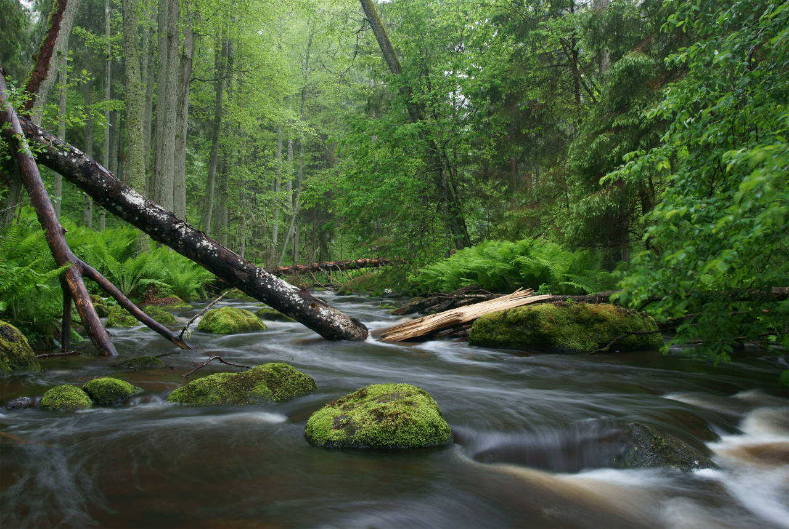

Justin Montagne
Photo Gallery
Image of a forest with a stream flowing down the center of it

I really like this image as it has a lot going on but it is very simple as well. Let me expand on this, this image is very relaxing but also energetic at the same time. This is due to the greenery in this image. The color green is a mix of blue and yellow. Blue is a calmer color while yellow is a more vibrant and energetic color. Green shares properties from both of these which is why this image is relaxing but also energetic. The darker greens on the side of the image are more relaxing while the lighter green where the sun is shining through is more energetic.